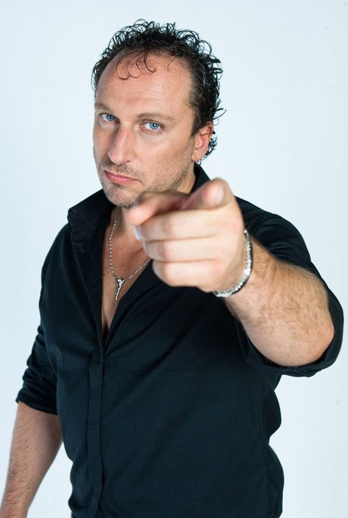

Родился 4 апреля 1967 года в Ленинграде. В юности занимался самбо и дзюдо (мастер спорта) под руководством Виктора Горлова и Аркадия Ротенберга, спортивной гимнастикой, в 1980-е годы завоевал звание чемпиона СССР по самбо среди юниоров.
Студент Ленинградского электротехнического института (факультет автоматики и вычислительной техники). Во время учёбы работал, потом начал заниматься фарцовкой. Когда был задержан правоохранительными органами с валютой, он, чтобы избежать уголовного преследования, ушёл на военную службу в ряды Советской армии. Как спортсмен был направлен в спортивную роту, но там не оказалось секции самбо, поэтому Нагиев отправился служить в войска ПВО под Вологду.
После армии поступил в Ленинградский государственный институт театра, музыки и кинематографии, и начал свою творческую жизнь.
